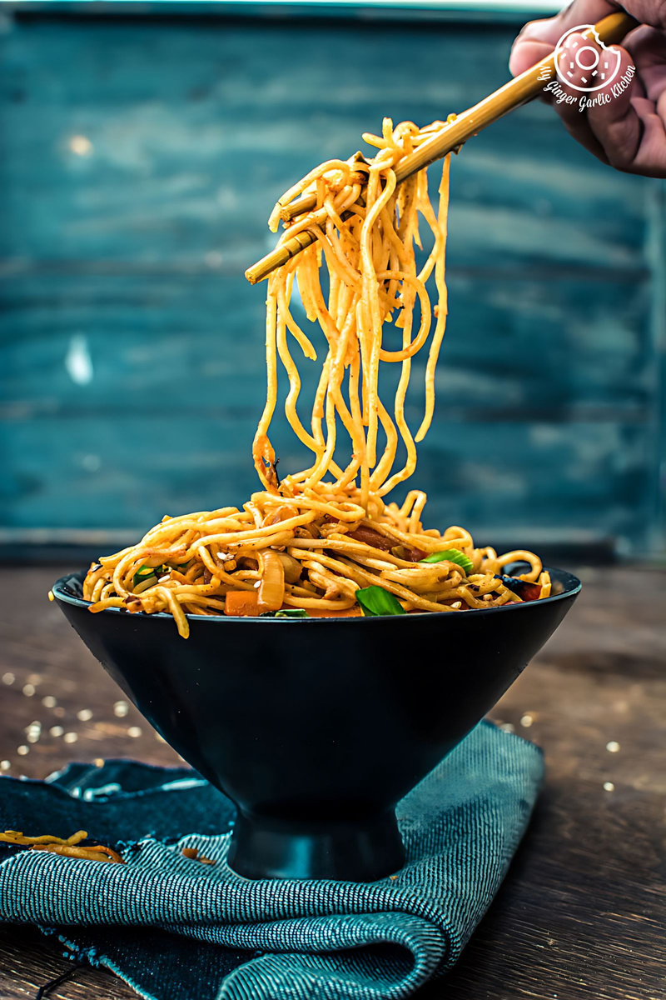

Noodles are a delicious and incredibly versatile global staple made from unleavened dough that is rolled flat and cut into long, thin strips. Typically crafted from wheat, rice, or buckwheat flour mixed with water and sometimes eggs, they are quickly boiled until tender. Because of their neutral flavor and satisfying texture, noodles act as a perfect canvas for a wide variety of culinary traditions. They are enjoyed all over the world in comforting hot noodle soups like ramen, tossed into fiery stir-fries with crisp vegetables, or coated in rich, savory sauces like spaghetti.